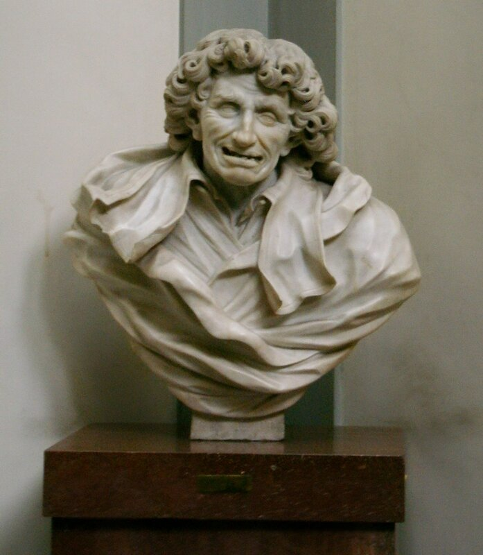

Чем ближе этот год приближается к концу, тем больше становится вероятность события, предполагающего, что наши записи будут появляться и в 2015 году. Это радует.
Печалит то, что в истекшем году нашей главной теме «Галера» было посвящено лишь пару разделов: куршейная пушка и как рубили рангоут на галерах; были также отдельные посты по системе комплектования экипажа галер и их тактике.
Правда, разрабатывалась еще одна тема, «Греческий огонь», но она носила универсальный характер, одинаково применимый как к гребным, так и к парусным кораблям.
Основное же внимание в уходящем году мы уделили парусным судам эпохи расцвета галер. Начали мы рассказ, если помните, с носителя зажигательных смесей харраки, увязали ее с караккой – а там уже понеслось: каракка, марсилиана, ког, хольк, каравелла…
Это был бег галопом по европам. Каждый из перечисленных нами парусников заслуживает большего, чем краткий очерк его пути по волнам истории. Он заслуживает упоминания хотя бы наиболее славных своих представителей, наиболее блистательных подвигов и трудов, выпавших не его долю. Но это уже необъятный материал, и будь у тебя хоть семь футов под килем семь пядей во лбу , природу не обмануть и материк необъятного знания не объять. Надо делать выбор и чем-то жертвовать. При всем при том, чего уж точно нельзя упустить – это конкретного устройства каждого судна, тех десяти отличий, которые необходимо найти, когда видишь перед собой изображения двух или более представителей парусных кораблей различных классов. Про подвиги и доблесть могут петь десятки соловьев, прозу корабельного мироустройства рассказать находится значительно меньше охотников. Задача непростая, как мы видели это уже при описании галер. Можно высоким штилем воспеть доблести каравеллы, но остаться абсолютным профаном в том, как был устроен на ней руль и какое мастерство требовалось рулевому, чтобы удержать корабль на указанном курсе. Курсе, который вел пока еще в никуда.
Я уже как-то говорил (когда речь шла о Кристофоро да Канале), что много еще неведомого скрыто в пыльных хранилищах старинных манускриптов и трактатов. Заглянув в один из таких трактатов, мы открыли для себя доселе нам незнакомую барзу. Сегодня обратимся к другому кораблю тех далеких времен – к коке, которая скрывается от нас под именем cocha в одной из рукописей Национальной центральной библиотеки Флоренции.
Эта рукопись входит в коллекцию, которую подарил Флоренции замечательный ученый и собиратель Антонио Мальябеки (Antonio Magliabechi). Про Мальябеки ходят удивительные легенды. Говорят, в частности, что он знал наизусть все прочитанные им книги из своего собрания. Для меня это не просто красивая легенда. Я знал еще одного такого человека, замечательного морского офицера и моего друга Женьку Бабуркина, земля ему пухом. На свою память я никогда не жаловался, да и окружающие подтверждали, что она вполне себе работает. Но сравниться с Бабуркиным по объему и оперативной гибкости памяти я не мог, как бы ни лез из кожи. Есть такие люди. Вот, видимо, таким был и Мальябеки.

Бюст Антонио Мальябеки (1633-1714) работы скульптора Antonio Montaiuti (1685-1740), Национальная центральная библиотека Флоренции
Но вернемся к рукописи из Флорентийской библиотеки (codex Magliabecchiano, XIX.7). Вот как описывает обстоятельства ее обнаружения историограф французского флота Огюстен Жаль в своей «Archéologie Navale» ( tome 2, Paris, 1840, Mémoire № 5):
Когда в конце 1834 г. я затребовал из библиотек и музеев Флоренции несколько документов, которые могли пролить свет на интересующие меня вопросы морской археологии, библиотекарь собрания Мальябеки (Magliabecchiana) отец Фоллини рассказал мне об одном манускрипте, упоминание о котором я видел, находясь еще в Венеции. Этот манускрипт содержал, наряду с другими документами, венецианский трактат о строительстве галер и латинских нефов (des galères et des nefs latines; имеются в виду парусники с латинским вооружением - g._g.). Изучение копии, которая оказалась перед моими глазами, позволило отнести рукопись к первым годам пятнадцатого века.
Сделаем небольшое отступление. Прошло уже без малого два века с момента описанных Жалем событий. Найденный им манускрипт достаточно подробно изучен и опубликован. Частично он появился в упомянутом мемуаре самого Жаля под названием «Строительство галер» (Fabrica di Galere), частично изучен уже нашими современниками. Манускрипт объемом 123 листа содержит тексты различных авторов. Некоторые, как уже упоминалось, были датированы 1410 годом, некоторые более поздним периодом. По содержанию в нем можно выделить разделы о фламандской галере (лл.1-13, 73-75), о галере, предназначенной для плавания в Адриатическом и Эгейском морях (Romania) с приложением об изготовлении парусов (лл.14-25, 75-? (нумерация отсутствует)), о малых галерах (лл.26-32), парусниках с латинским вооружением (лл.33-36) и с прямым парусным вооружением (лл.37-49, 88-100). На страницах рукописи находится формула – возможно, самая ранняя из известных нам – для вычисления водоизмещения судна по его размерениям. Отдельные разделы посвящены рангоуту и такелажу, парусному делу как для судов с латинским так и с прямым вооружением., стоимости корабельного леса, железных изделий для кораблей, весел и другого корабельного оборудования. За прошедшие после Жаля годы была найдена еще одна копия этого манускрипта, которая под названием Arte di far galee e navi находится в Австрийской национальной библиотеке (Marco Foscari Collection, cod. 6391).
Вернемся к тексту О.Жаля:
Скрупулезная работа над этим документом дала мне возможность познакомиться с искусством кораблестроения во второй половине четырнадцатого века. Я прочитал манускрипт со всем вниманием, которое он требовал, и пришел к убеждению, что по отношению к эпохе, к которой относится трактат, я не найду уже быть может никогда ничего более важного для своего образования, чем Fabbriсa di galere.
Манускрипт был написан на венецианском языке, перегружен техническими терминами, точный смысл которых не так легко прояснить, поэтому изучить его за несколько дней моего пребывания во Флоренции было невозможно. Поэтому я ограничился лишь несколькими выписками из него; для себя я решил сделать полную копию документа для последующей его публикации. Пока я продолжал свою поездку, мой соотечественник M. Vieusseux, нанял человека, способного сделать копию, которую я и получил позже в Париже.
Кто был автором этого манускрипта? Я не знаю. Флорентийская рукопись венецианского трактата не содержит никаких указаний, дающих возможность назвать имя автора. Что касается его профессии, то у меня нет никаких сомнений: это не ученый монах, не писатель, волею случая взявшийся за написание работы по специальным вопросам; это, очевидно, профессионал, protomaestro арсенала, капитан галеры, или, по меньшей мере, корабельный мастер marangone, который, отложив в сторону топор, компас и отвес, взялся за перо, чтобы объединить в одном подробном документе все предписания, вытекающие из его практики.
Итак, мы имеем дело с очень интересным документом о корабельной деле на рубеже XIV и XV веков. В следующий раз углубимся в его содержание, остановившись, понятно, на особенностях конструкции парусного корабля той эпохи.